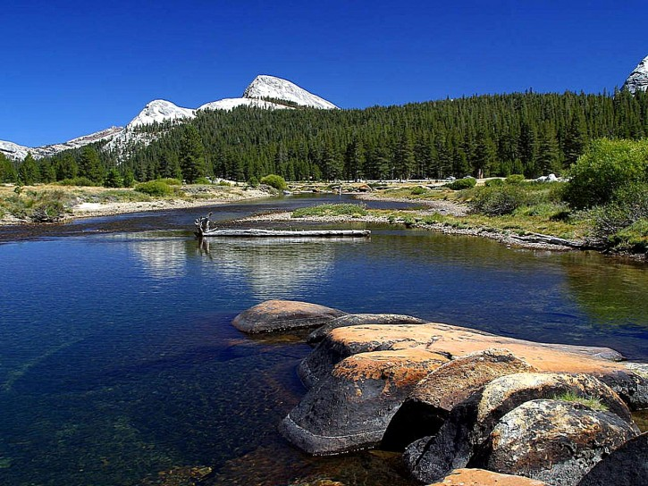

Ein Histogramm zeigt die Helligkeitsverteilung eines Bildes in Form eines Balkendiagramms an. Auf der horizontalen Achse befinden sich die Farb-/Helligkeitswerte. Die Höhe eines Balkens gibt an, wie häufig dieser Farb-/Helligkeitswert im Bild vorkommt. Im einfachsten Falle eines Graustufenbildes spiegelt es die Anzahl von Pixeln der Farben Schwarz (am linken Rand) bis Weiß (am rechten Rand) wieder.
Anhand eines Histogramms kann man die Farbverteilung und somit die korrekte Belichtung (Unter-/Überbelichtung), den Kontrast und andere visuelle Attribute des Ausgangsbildes abschätzen.

Pellentesque habitant morbi tristique senectus et netus et malesuada fames ac turpis egestas. Vestibulum tortor quam, feugiat vitae, ultricies eget, tempor sit amet, ante. Donec eu libero sit amet quam egestas semper. Aenean ultricies mi vitae est. Mauris placerat eleifend leo. Quisque sit amet est et sapien ullamcorper pharetra.
Vestibulum erat wisi, condimentum sed, commodo vitae, ornare sit amet, wisi. Aenean fermentum, elit eget tincidunt condimentum, eros ipsum rutrum orci, sagittis tempus lacus enim ac dui. Donec non enim in turpis pulvinar facilisis.
Ut felis. Praesent dapibus, neque id cursus faucibus, tortor neque egestas augue, eu vulputate magna eros eu erat. Aliquam erat volutpat. Nam dui mi, tincidunt quis, accumsan porttitor, facilisis luctus, metus.
Pellentesque habitant morbi tristique senectus et netus et malesuada fames ac turpis egestas.
Vestibulum tortor quam, feugiat vitae, ultricies eget, tempor sit amet, ante. Donec eu libero sit amet quam egestas semper. Aenean ultricies mi vitae est. Mauris placerat eleifend leo. Quisque sit amet est et sapien ullamcorper pharetra. Vestibulum erat wisi, condimentum sed, commodo vitae, ornare sit amet, wisi. Aenean fermentum, elit eget tincidunt condimentum, eros ipsum rutrum orci, sagittis tempus lacus enim ac dui.
Donec non enim in turpis pulvinar facilisis. Ut felis. Praesent dapibus, neque id cursus faucibus, tortor neque egestas augue, eu vulputate magna eros eu erat. Aliquam erat volutpat. Nam dui mi, tincidunt quis, accumsan porttitor, facilisis luctus, metus.